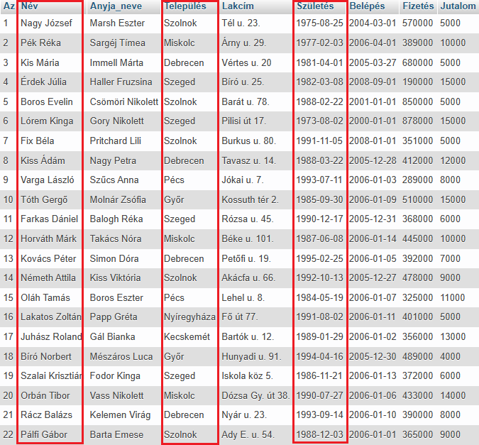
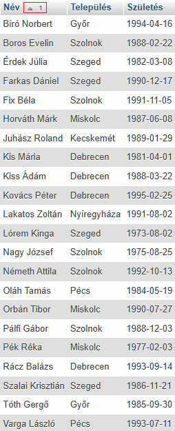
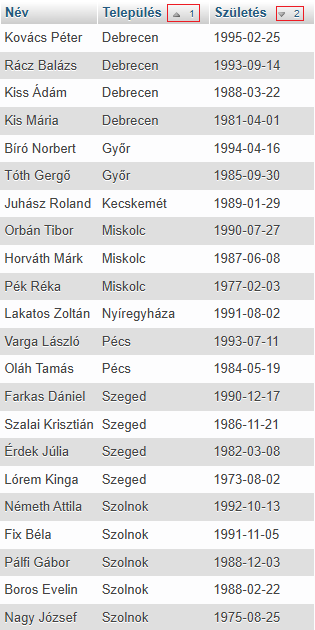

A ORDER BY utasítás egy eredménytábla növekvő vagy csökkenő sorrendbe rendezésére szolgál.
A ORDER BY utasítás alapértelmezés szerint növekvő sorrendbe (ASC) rendezi a rekordokat.
A visszaadott adatokat egy eredménytáblában, az úgynevezett eredményhalmazban tárolja a rendszer.
A rendezést a mező neve meletti kis nyíl jelöli és egy szám, amely azt jelöli, hogy hányadik rendezést hajtjuk végre a halmazon.
SELECT Név, Település,
Születés
FROM dolgozók
ORDER BY Név;


Látható, hogy az eredménytábla a kiválasztott mezőkből áll. Több sorban (rekord) is szerepelhet ugyanaz az érték ugyanabban az oszlopban (mező).
SELECT Név, Település,
Születés
FROM dolgozók
ORDER BY Település
ASC, Születés
DESC;

Látható, hogy az eredménytábla a kiválasztott mezőkből áll. Több sorban (rekord) is szerepelhet ugyanaz az érték ugyanabban az oszlopban (mező).
Az ORDER BY után mindig balról jobbra hajtja végre a rendezéseket!
Itt most először a Település (növekvő - ASC alapértelmezett) majd a Születés (csökkenő DESC) szerint.